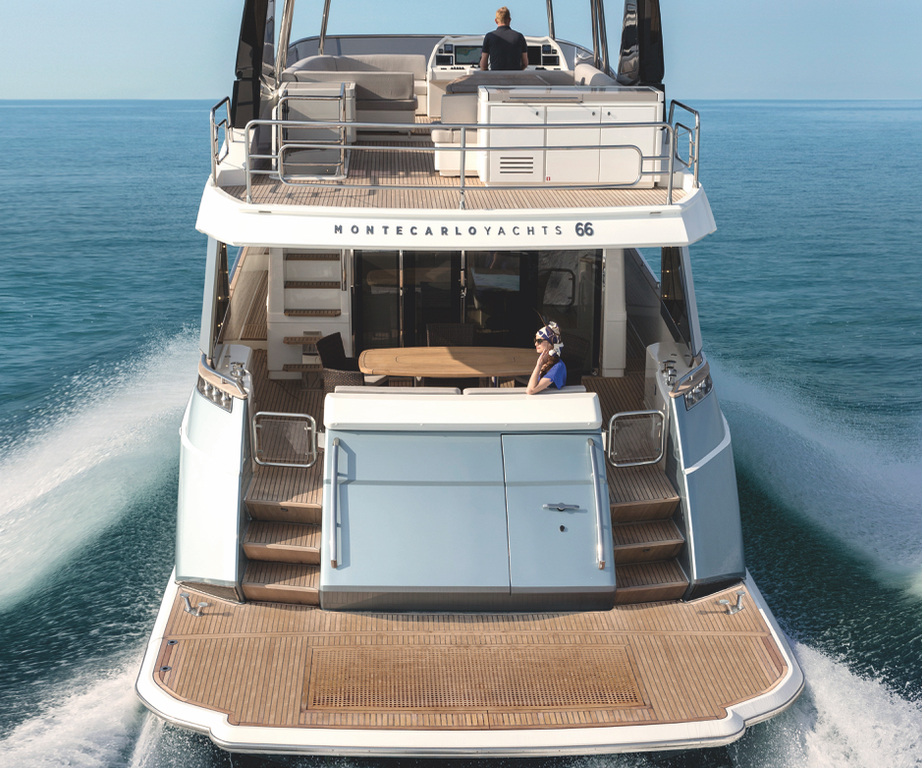
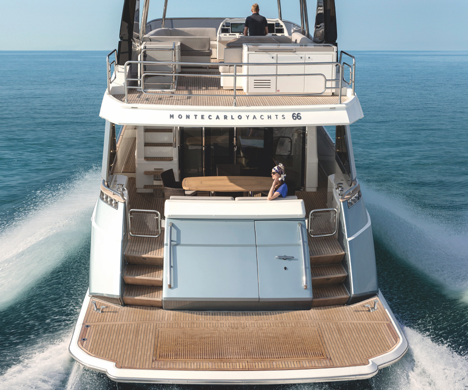
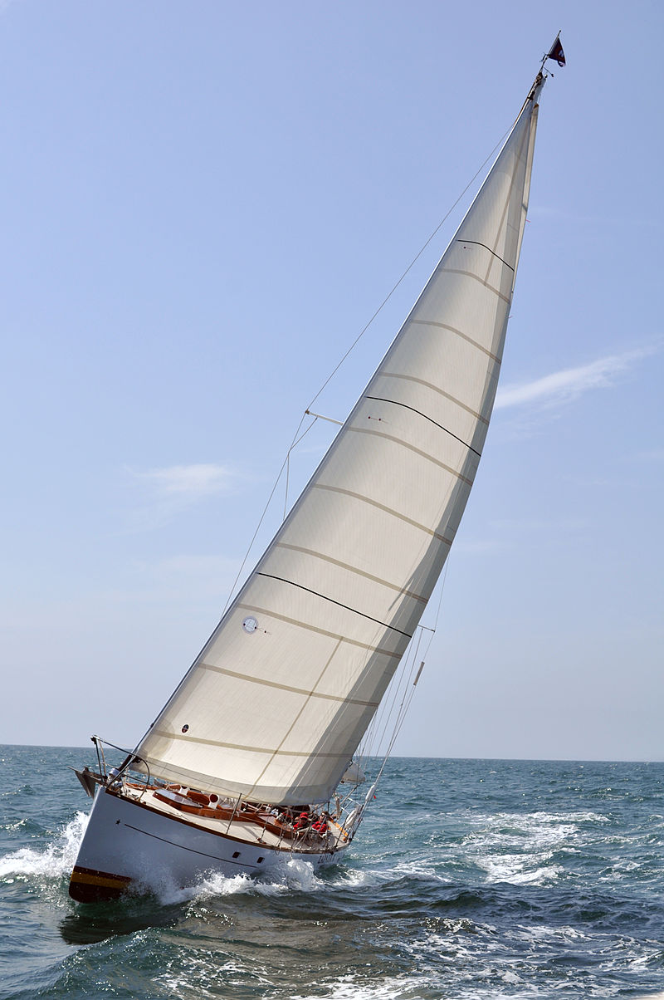
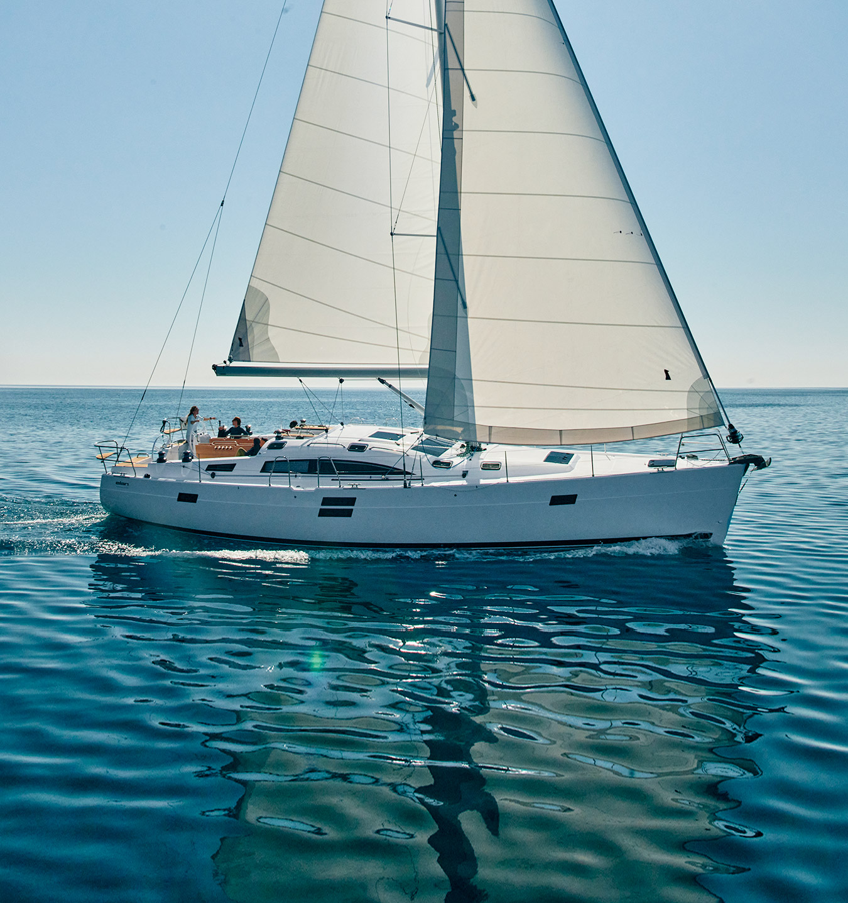
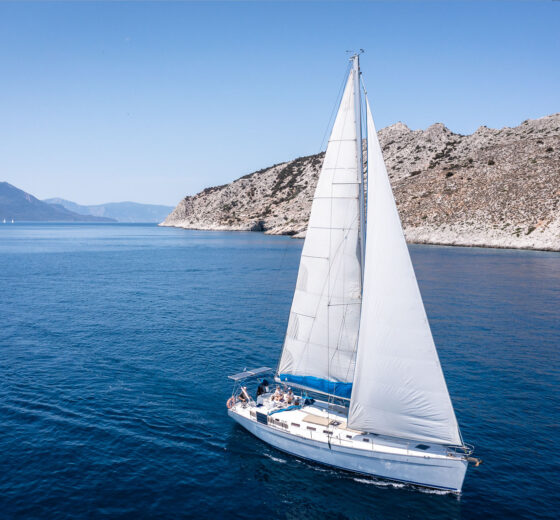
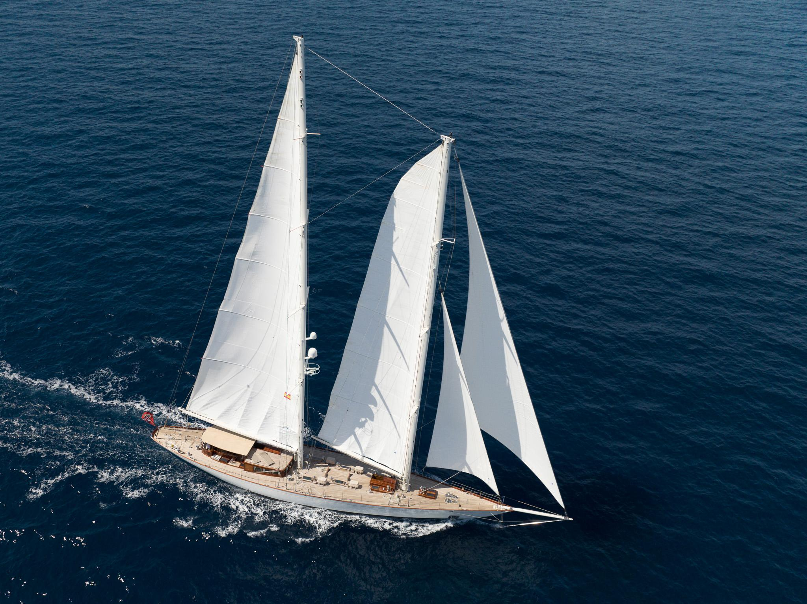

Яхта (нидерл. jacht, отјадеп — гнать, преследовать) — первоначально лёгкое, быстрое судно для перевозки отдельных персон, оборудованное палубой и каютой (каютами).
В современном понимании — любое судно, предназначенное для спортивных или туристических целей и отдыха.
К яхтам не относятся рейсовые суда, предназначенные для коммерческих целей, для перевозки большого числа пассажиров (когда основная цель — транспортная, а не отдых и развлечежи на борту судна) II других транспортных целей.
Классификация
- по назначению. спортивные (сгоночные) и круизные (крейсерские);
- по приводу парусные, парусно-моторные и моторные;
- по мореходности: морские и яхты для внутренних водоемов (рек озер);
- по типу корпуса классические однокорпусные, катамараны и тримараны.
Парусные яхты
За первенство в создании парусных яхт борются греки, египтяне и финикийцы. Историки заявляют о появлении первых парусных судов более 10 тыс. лет назад в водах Эгейского моря.  Парусным яхтами считаются суда, использующие аэро- и гидродинамику и приводимые в движение силой ветра, дующего в паруса.Современные парусные яхты часто оборудованы мотором. Корпуса первых парусных яхт изготавливались из дерева. Современный перечень материалов очень велик.  Корпуса парусных яхт изготавливают из стали, алюминия, армоцемента и стеклопластика и др. материалов. Количество парусов на парусных яхтах может быть различно и зависит от целей используемой яхты. Тоночные яхты, как правило, оснащены большим количеством парусов, на крейсерских яхтах для удобства управления количество парусов минимально. Самые большие в мире парусные суда «Крузенштерн» и «Седов» - имеют по 34 паруса. Условно паруса можно разделить на четыре вида: основные, передние, дополнительные и штормовые
По своему назначению парусные яхты делятся на крейсерские, имеющие комфортабельные каюты и рассчитанные на дальние туристические походы; гоночные, имеющие только кокпит для экипажа и не имеющие кают, предназначенные для непродолжительных гонок; а также гоночные крейсерские, имеющие малокомфортные каюты, предназначенные для многодневных гонок.  По принципу обеспечения остойчивости яхты делятся на килевые яхты, у которых днище переходит в балластный киль (точнее фальшкиль), который смещает центр тяжести вниз и препятствует сносу (дрейфу) яхты при ходе под парусами; швертботы, имеющие шверт (выдвижной киль), который лишь препятствует сносу, а центр тяжести изменяется размещением экипажа по бортам яхты; и компромиссы, имеющие балластный фальшкиль и выдвижной шверт. Также имеются конструкции с двумя килями,  которые позволяют сохранить вертикальное положение яхты при отливе на мелководье. Другой принцип обеспечения остойчивости используется на катамаранах и тримаранах. На катамаранах остойчивость обеспечивают два широко разнесенных корпуса судна, на тримаранах - два поплавка, разнесенных по обоим бортам судна. Существуют яхты, состоящие более чем из трех корпусов. Основными частями яхты принято считать корпус и парусное вооружение. Парусное вооружение может быть одномачтовым (шлюп) и многомачтовыми (например, шхуна, йол и кетч). Парусное вооружение разделяют на рангоут, стоячий и бегучий такелаж. Популярным видом отдыха на парусных яхтах являются регаты.
Моторные яхты
Моторные яхты обладают достаточно мощным дизельным двигателем (обычно их два, иногда три). Такие яхты хороши для быстрых передвижений, они могут развивать скорость до 40 узлов (около 74 км/ч), обладают высокой мобильностью, не зависящей от направления и скорости ветра. В большинстве моделей (среднего и верхнего классов) присутствует стабилизатор качки. Внутренние помещения более просторны и комфортны по сравнению с парусной яхтой такого же размера.
Однако использование мощных двигателей значительно увеличивает полную стоимость аренды из-за большого расхода топлива. Моторные яхты используют, как правило, для кратковременных и быстрых перемещений из бухты в бухту, так как работа моторов и удары волны о корпус при быстром ходе могут быть несколько утомительны.